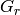

LoadSQW dialog.
Table of Contents
| Name | Direction | Type | Default | Description |
|---|---|---|---|---|
| Filename | Input | string | Mandatory | File of type SQW format. Allowed extensions: [‘.sqw’] |
| MetadataOnly | Input | boolean | False | Load Metadata without events. |
| OutputFilename | Input | string | If specified, the output workspace will be a file-backed MDEventWorkspace. Allowed extensions: [‘.nxs’] | |
| Q3DFrames | Input | string | Q_sample | The required frame for the output workspace. Allowed values: [‘Q_sample’, ‘HKL’] |
| OutputWorkspace | Output | MDEventWorkspace | Mandatory | Output IMDEventWorkspace reflecting SQW data |
The algorithm reads the pixel information defined in an .sqw file produced by the Horace program and stores it in a MDEventWorkspace.
SQW objects in Horace can be split into 4 sections (see below for more detail):
They can then come in two flavours:
DND-type objects can not be currently read or understood by Mantid.
Here we describe all of the fields of the .sqw file along with remarks regarding how they are treated within Mantid.
Preamble:
% appname Name of the application that wrote the file (not stored)
% appversion Version of the application used to write the file (not stored)
% sqw_type Flag indicating object type (not stored)
% ndims Number of dimensions of the SQW file (ignored, always assumed to be 4)
Main_header:
% main_headerfilename Name of sqw file that is being read, excluding path (ignored)
% main_headerfilepath Path to sqw file that is being read, including terminating file separator (ignored)
% main_headertitle Title of sqw data structure
% main_headernfiles Number of spe files that contribute to the sqw object
Header: (scalar structure, or cellarray of scalar structures if more than one spe file)
% header{i}.filename Name of sqw file excluding path
% header{i}.filepath Path to sqw file including terminating file separator
% header{i}.efix Fixed energy (ei or ef depending on emode)
% header{i}.emode Emode=1 direct geometry, =2 indirect geometry, =0 if diffraction ''' Only emode 1 have ever been tried '''
% header{i}.alatt Lattice parameters (Angstroms)
% header{i}.angdeg Lattice angles (deg)
% header{i}.cu First vector defining scattering plane (r.l.u.)
% header{i}.cv Second vector defining scattering plane (r.l.u.)
% header{i}.psi Orientation angle (rad)
% header{i}.omega --|
% header{i}.dpsi | Crystal misorientation description (rad)
% header{i}.gl | (See notes elsewhere e.g. Tobyfit manual
% header{i}.gs --|
% header{i}.en Energy bin boundaries (meV) in the input spe file [column vector]
% header{i}.uoffset Offset of origin of pixel projection axes in r.l.u. and energy i.e. [h; k; l; en] [column vector]
% header{i}.u_to_rlu Matrix (4x4) of pixel projection axes in hkle representation
% u(:,1) first vector - u(1:3,1) r.l.u., u(4,1) energy etc.
% header{i}.ulen Length of pixel projection axes vectors in Ang^-1 or meV [row vector]
% header{i}.ulabel Labels of the pixel projection axes [1x4 cell array of character strings]
The pixel projection axes u1, u2, u3 define the coordinate frame in which the pixel coordinates are stored in data.pix. They are defined such that:
 )
)Units are  for all 3 axes.
for all 3 axes.
Detpar:
% detpar.filename Name of file excluding path
% detpar.filepath Path to file including terminating file separator
% detpar.group Row vector of detector group number
% detpar.x2 Row vector of secondary flightpaths (m)
% detpar.phi Row vector of scattering angles (deg)
% detpar.azim Row vector of azimuthal angles (deg)
% (West bank=0 deg, North bank=90 deg etc.)
% detpar.width Row vector of detector widths (m)
% detpar.height Row vector of detector heights (m)
Data:
% data.filename Name of sqw file that is being read, excluding path
% data.filepath Path to sqw file that is being read, including terminating file separator
% data.title Title of sqw data structure
* data.alatt Lattice parameters for data field (Ang^-1)
* data.angdeg Lattice angles for data field (degrees)
% data.uoffset Offset of origin of projection axes in r.l.u. and energy ie. [h; k; l; en] [column vector]
% data.u_to_rlu Matrix (4x4) of projection axes in hkle representation
% u(:,1) first vector - u(1:3,1) r.l.u., u(4,1) energy etc.
% data.ulen Length of projection axes vectors in Ang^-1 or meV [row vector]
% data.ulabel Labels of the projection axes [1x4 cell array of character strings]
% data.iax Index of integration axes into the projection axes [row vector]
% Always in increasing numerical order
% e.g. if data is 2D, data.iax=[1,3] means summation has been performed along u1 and u3 axes
% data.iint Integration range along each of the integration axes. [iint(2,length(iax))]
% e.g. in 2D case above, is the matrix vector [u1_lo, u3_lo; u1_hi, u3_hi]
% data.pax Index of plot axes into the projection axes [row vector]
% Always in increasing numerical order
% e.g. if data is 3D, data.pax=[1,2,4] means u1, u2, u4 axes are x,y,z in any plotting
% 2D, data.pax=[2,4] " u2, u4, axes are x,y in any plotting
% data.p Call array containing bin boundaries along the plot axes [column vectors]
% i.e. row cell array {data.p{1}, data.p{2} ...} (for as many axes as length of data.pax)
% data.dax Index into data.pax of the axes for display purposes. For example we may have
% data.pax=[1,3,4] and data.dax=[3,1,2] This means that the first display axis is data.pax(3)=4,
% the second is data.pax(1)=1, the third is data.pax(2)=3. The reason for data.dax is to allow
% the display axes to be permuted but without the contents of the fields p, s,..pix needing to
% be reordered [row vector]
-----> Large data fields, data for MD image
% data.s Cumulative signal. [size(data.s)=(length(data.p1)-1, length(data.p2)-1, ...)]
% data.e Cumulative variance [size(data.e)=(length(data.p1)-1, length(data.p2)-1, ...)]
% data.npix No. contributing pixels to each bin of the plot axes.
% [size(data.pix)=(length(data.p1)-1, length(data.p2)-1, ...)]
----->
* data.urange True range of the data along each axis [urange(2,4)]
----> Pixels or events data
* data.pix Array containing data for each pixel:
* If npixtot=sum(npix), then pix(9,npixtot) contains:
* u1 -|
* u2 | Coordinates of pixel in the pixel projection axes
* u3 |
* u4 -|
* irun Run index in the header block from which pixel came
* idet Detector group number in the detector listing for the pixel
* ien Energy bin number for the pixel in the array in the (irun)th header
* signal Signal array
* err Error array (variance i.e. error bar squared)
data.s is normalized by the number of pixels, as is the variance data.e. For those elements where data.npix==0, data.s=0 and data.e=0
The pixel information from the file is transformed to the frame selected by the user. More specifically the final coordinates are computed by applying one of the following transformations:


where is the identity matrix, is
the uper-left 3x3 portion of u_to_rlu,
 is the matrix of rotation from the goniometer and  is the rotation matrix
that maps from the cartesian coordinate system attached to the sample to the spectrometer
coordinate system.The energy value is left unchanged.
is the rotation matrix
that maps from the cartesian coordinate system attached to the sample to the spectrometer
coordinate system.The energy value is left unchanged.
The following assumptions are made about data contained within the file.
Categories: Algorithms | DataHandling\SQW | MDAlgorithms\DataHandling